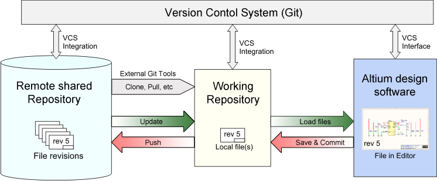
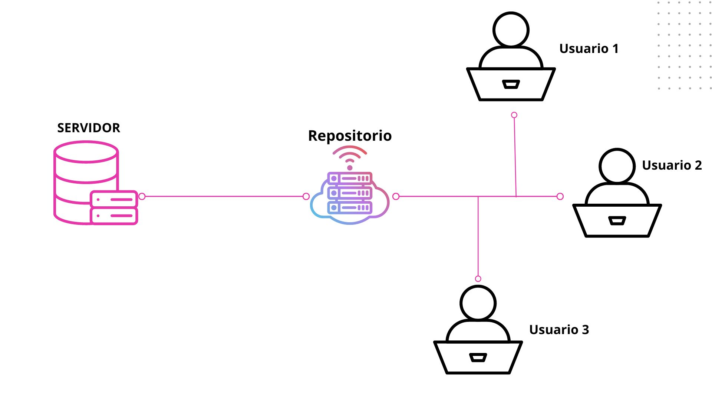
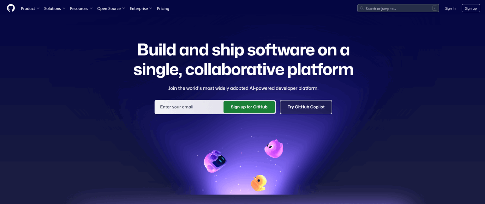
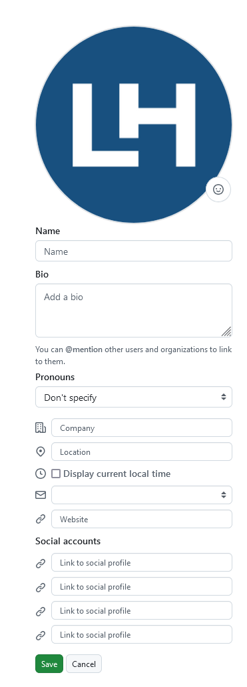
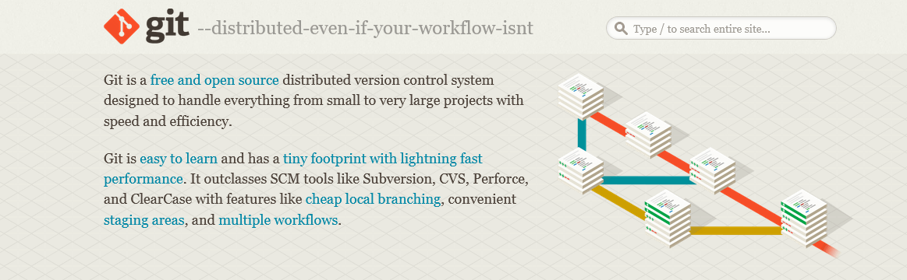
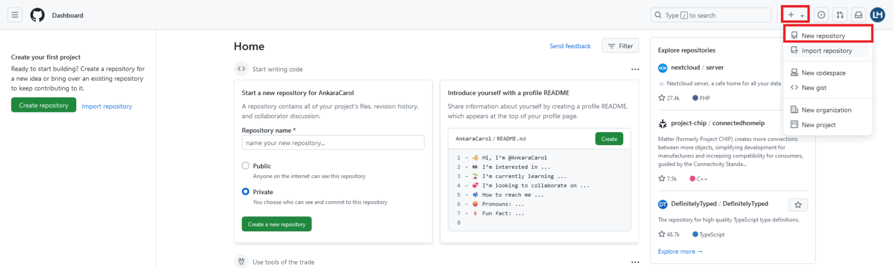
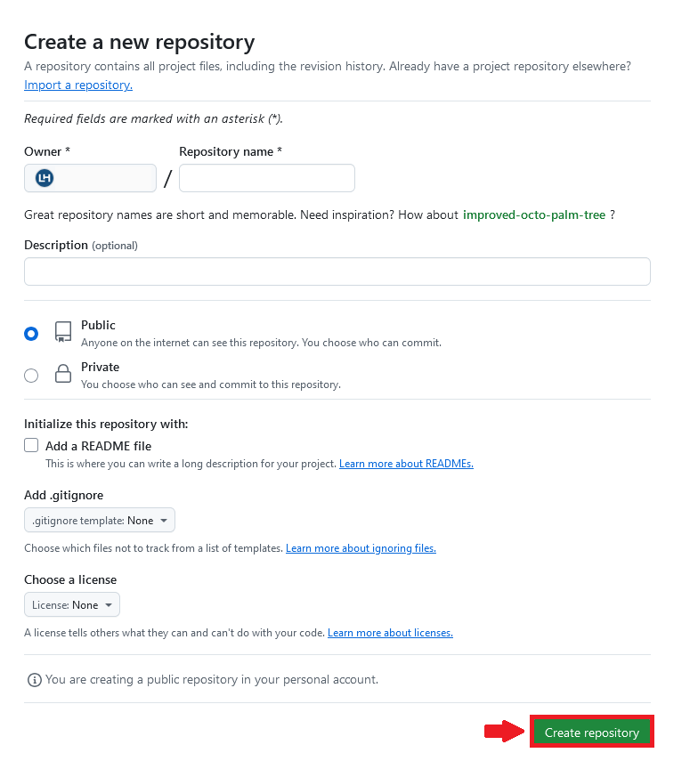

Git es un software de control de versiones gratis
y de código abierto. Fue creado por Linus Torvalds
en 2005. Esta herramienta es un sistema de control
de versiones que fue inicialmente desarrollado para
trabajar con varios desarrolladores en el núcleo de Linux.
Esto significa básicamente que Git es un rastreador
de contenido. Así que Git puede ser utilizado para
almacenar contenido — y se usa principalmente para
almacenar código debido a otras características que
proporciona.
Los proyectos de la vida real generalmente tienen
múltiples desarrolladores trabajando en paralelo.
Así que necesitan un sistema de control de versiones
como Git para asegurarse de que no hay conflictos de
código entre ellos.
Además, los requerimientos
en este tipo de proyectos cambian
constantemente. Así que un sistema
de control de versiones permite a los
desarrolladores revertir y regresar a una
versión anterior de su código.
El sistema de ramas en Git permite a los
desarrolladores trabajar individualmente en
una tarea (Por ejemplo: una rama -> una tarea O una Rama -> un desarrollador).
Básicamente, se puede pensar en Git como una aplicación de software pequeña que
controla tu código base, si eres un desarrollador

Muestra de cómo funciona Git
Características Clave de Git
1. Distribuido y Descentralizado:
A diferencia de los sistemas de control de versiones centralizados, en los que se almacena una única copia del
repositorio, Git es distribuido y como desarrolladores tenemos una copia completa del historial de cambios. Esto nos
permite trabajar de forma independiente y fusionar nuestros cambios en el repositorio principal de manera eficiente.
2. Rastreo Preciso de Cambios:
Git realiza un seguimiento preciso de los cambios realizados en cada archivo a lo largo del tiempo. Esto nos permite
como desarrollador ver el historial completo de cambios, incluidas las diferencias entre versiones y la posibilidad
de regresar a versiones anteriores en caso de problemas.
3. Ramificación Eficiente:
Git hace que la creación y gestión de ramas branches sea sencillo. Como desarrollador podemos crear ramas para
trabajar con nuevas características o arreglos sin afectar la rama principal. Esto fomenta el desarrollo paralelo y
facilita la colaboración en equipos grandes.
4. Fusiones Simplificadas:
La capacidad de fusionar cambios entre diferentes ramas es una característica clave de Git. Como desarrollador podemos
combinar cambios de manera eficiente, lo que facilita la integración continua y evita conflictos de código.
Repositorios Git
Si queremos empezar a usar Git, necesitamos saber dónde alojar
nuestros repositorios.
Un repositorio (o "Repo" para abreviar) es un proyecto que contiene
múltiples archivos. En nuestro caso un repositorio contendrá archivos
basados en código.
Hay dos maneras en que puedes alojar tus repositorios.
Uno es en línea (en la nube) y la segunda es fuera de línea
(auto-instalado en tu servidor).
Hay tres servicios de alojamiento popular de Git: GitHub
(propiedad de Microsoft), GitLab (propiedad de GitLab)
y BitBucket. Usaremos GitHub como nuestro servicio de alojamiento.
¿Porque es nesesario Git?
Git facilita la contribución a proyectos de código abierto:
Casi todos los proyectos de código abierto utilizan GitHub para gestionar sus proyectos.
Usar GitHub es gratis si tu proyecto es de código abierto, e incluye un wiki y un
rastreador de problemas que facilita la inclusión de documentación más detallada y
recibir retroalimentación sobre tu proyecto.
Si quieres contribuir, simplemente bifurcas (obtienes una copia de) un proyecto, realizas
tus cambios, y luego envías un Pull Request al proyecto utilizando la interface web de
GitHub. Este Pull Request es tu manera de decirle al proyecto que estás listo para que
revisen tus cambios.
Documentación:
Utilizando GitHub, facilitas la obtención de excelente documentación. Su sección de ayuda
y las guías tienen artículos para casi cualquier tema relacionado a Git en el que puedas
pensar.
Opciones de Integración:
GitHub puede integrarse con plataformas comunes como Amazon y Google Cloud, con servicios
como Code Climate para rastrear tus comentarios y puede resaltar la sintaxis en más de 200
lenguajes de programación diferentes.
Rastrea cambios en tu código a través de versiones:
Cuando varias personas colaboran en un proyecto, es difícil mantener el seguimiento
de las revisiones — quién cambió qué, cuándo, y dónde están almacenados esos archivos.
GitHub se ocupa de este problema manteniendo un seguimiento de todos los cambios que se
han enviado al repositorio.
Al igual que cuando se usa Microsoft Word o Google Drive, puedes tener un historial de
las versiones de tu código, de manera que las versiones previas no se pierden con cada
iteración. Es fácil regresar a la versión previa y contribuir a tu trabajo.
Muestra tu trabajo:
¿Eres un desarrollador que desea atraer a reclutadores? GitHub es la mejor herramienta
en la que puedes confiar para esto.
Hoy, al buscar nuevos reclutas para sus proyectos, la mayoría de las compañías miran
los perfiles de GitHub. Si tu perfil está disponible, tendrás mayores posibilidades de
ser reclutado incluso si no eres de una gran universidad o colegio.
Como Instalar Git
Instalación en Linux
Si quieres instalar Git en Linux a través de un instalador binario, en general
puedes hacerlo mediante la herramienta básica de administración de paquetes que
trae tu distribución. Si estás en Fedora por ejemplo, puedes usar yum:
$ yum install git
Si estás en una distribución basada en Debian como Ubuntu, puedes usar apt-get:
$ apt-get install git
Para opciones adicionales, la página web de Git tiene instrucciones de instalación
en diferentes tipos de Unix. Puedes encontrar esta información en http://git-scm.com/download/linux .
Instalación en Mac
Hay varias maneras de instalar Git en un Mac. Probablemente la más sencilla es instalando las herramientas Xcode de
Línea de Comandos. En Mavericks (10.9 o superior) puedes hacer esto desde el Terminal si intentas ejecutar git por primera vez.
Si no lo tienes instalado, te preguntará si deseas instalarlo.
Si deseas una versión más actualizada, puedes hacerlo a partir de un instalador binario. Un instalador de Git para OSX es mantenido
en la página web de Git. Lo puedes descargar en http://git-scm.com/download/mac.
Figura 7. Instalador de Git en OS X.
También puedes instalarlo como parte del instalador de Github para Mac. Su interfaz gráfica de usuario tiene la opción de instalar
las herramientas de línea de comandos. Puedes descargar esa herramienta desde el sitio web de Github para Mac en http://mac.github.com .
Instalación en Windows
También hay varias maneras de instalar Git en Windows. La forma más oficial está disponible para ser descargada en el sitio
web de Git. Solo tienes que visitar http://git-scm.com/download/win y la descarga empezará automáticamente. Fíjate que éste
es un proyecto conocido como Git para Windows (también llamado msysGit), el cual es diferente de Git. Para más información acerca
de este proyecto visita http://msysgit.github.io/ .
Otra forma de obtener Git fácilmente es mediante la instalación de GitHub para Windows. El instalador incluye la versión de línea
de comandos y la interfaz de usuario de Git. Además funciona bien con Powershell y establece correctamente "caching" de credenciales
y configuración CRLF adecuada. Aprenderemos acerca de todas estas cosas un poco más adelante, pero por ahora es suficiente mencionar
que éstas son cosas que deseas. Puedes descargar este instalador del sitio web de GitHub para Windows en http://windows.github.com .
Tambien puedes ver como instalar Git en el siguiente link
Comandos básicos de Git
Para utilizar Git, los desarrolladores utilizan comandos específicos para copiar, crear, cambiar y combinar el código.
Estos comandos pueden ejecutarse directamente desde la línea de comandos o utilizando una aplicación como GitHub Desktop.
Aquí tienes algunos comandos comunes para utilizar Git:
git init inicializa un repositorio nuevo de Git y comienza a supervisar el directorio existente. Este agrega una subcarpeta
oculta dentro del directorio existente que hospeda la estructura de datos interna que se requiere para el control de versiones.
git clone crea una copia local de un proyecto que ya existe remotamente. El clon incluye todos los archivos,
historial y ramas del proyecto.
git add almacena provisionalmente un cambio. Git rastrea los cambios que se hacen a la base de código de un
desarrollador, pero es necesario probarlos y tomar una captura de pantalla de ellos para incluirla en el historial del proeycto.
Este comando realiza pruebas, la primera parte de este proceso de dos pasos. Cualquier cambio que se pruebe, se convertirá en
parte de la siguiente captura de pantalla y también del historial del proyecto. Las pruebas y confirmaciones por separado
otorgan a los desarrolladores el control completo sobre el historial y sobre el proyecto sin cambiar la forma en la que
codifican y trabajan.
git commit guarda la instantánea del historial del proyecto y completa el proceso de seguimiento de los cambios. En resumen,
una confirmación funciona tal como el tomar una fotografía. Todo lo que se haya almacenado provisionalmente con git add pasará
a formar parte de la instantánea con git commit.
git status muestra el estado de los cambios como sin seguimiento, modificados o almacenados provisionalmente.
git branchmuestra las ramas en las que se trabaja localmente.
git merge combina las líneas de desarrollo. Este comando habitualmente se utiliza para combinar los cambios
que se realizan en dos ramas distintas. Por ejemplo, un desarrollador podría hacer una fusión cuando necesite combinar los
cambios de una rama de característica en la rama de desarrollo principal.
git pullactualiza la línea de desarrollo local con actualizaciones de sus contrapartes remotas. Los desarrolladores
utilizan este comando si un compañero de equipo hizo confirmaciones en una rama en un repositorio remoto y quieren reflejarlos
en su ambiente local.
git push actualiza el repositorio remoto con las confirmaciones realizadas localmente en una rama.
Aqui puedes ver una guia completa de comandos de Git
Ventajas de Usar Git en el Desarrollo de Software
1. Historial Completo y Rastreable:
Git permite rastrear y documentar cada cambio realizado en el código a lo largo del tiempo. Esto facilita la
identificación de quién hizo qué cambio y cuándo, lo que es esencial para resolver problemas y mantener la
transparencia en el desarrollo.
2. Desarrollo Colaborativo sin Fricción:2. Desarrollo Colaborativo sin Fricción
Con Git, varios desarrolladores pueden trabajar en paralelo en diferentes características o soluciones sin
interferir en el trabajo de los demás. Las ramas y las fusiones simplifican la colaboración y permiten una
integración continua más fluida.
3. Reversión Sencilla y Segura:
En caso de errores o problemas, Git nos permite como desarrolladores retroceder a versiones anteriores de
manera rápida y segura. Esto reduce el riesgo de impactos negativos en el proyecto y facilita la corrección de errores.
3. Reversión Sencilla y Segura
En caso de errores o problemas, Git nos permite como desarrolladores retroceder a versiones anteriores de
manera rápida y segura. Esto reduce el riesgo de impactos negativos en el proyecto y facilita la corrección de errores.
4. Flujo de Trabajo Flexible
Git se adapta a diferentes flujos de trabajo, desde el modelo de ramificación estándar hasta enfoques más
avanzados como Gitflow o GitHub Flow. Esto permite a los equipos adaptar Git a sus necesidades específicas.
5. Integración con Plataformas de Colaboración
Plataformas como GitHub ofrecen características de seguimiento de problemas, revisión de código y
colaboración en proyectos. Git se integra perfectamente con estas herramientas, facilitando la gestión de
proyectos y el trabajo en equipo.

¿Qué es GitHub?
GitHub es una plataforma web que proporciona un espacio para almacenar,
compartir y colaborar en proyectos de software que utilizan Git.
Cuenta con una interfaz visual que facilita la gestión de proyectos y la
colaboración en equipo, además de tener funcionalidades adicionales como
issues, pull requests, wikis y GitHub Actions para integración y despliegue
continuo (CI/CD).
Los repositorios en GitHub se encuentran en la nube, lo que permite acceder
a ellos de forma remota y facilita la colaboración entre desarrolladores,
sin importar dónde estén.
Git se
puede utilizar sin necesidad de GitHub, pero GitHub depende totalmente de
Git para gestionar los repositorios, y así aprovechar las funcionalidades
del control de versiones.
Principales Características de GitHub
1.Repositorios
Un repositorio es donde se almacena todo el contenido de un proyecto: código, documentación, imágenes y más. En GitHub puedes crear:
Repositorios públicos: Visibles para cualquier persona.
Repositorios privados: Solo accesibles para quienes tú autorices.
2. Colaboración
GitHub facilita la colaboración mediante herramientas como:
Pull requests: Para revisar y discutir cambios antes de integrarlos.
Issues: Para rastrear errores, nuevas funcionalidades o ideas.
Wikis: Para documentar proyectos.
3. GitHub Actions (CI/CD)
Con GitHub Actions, puedes automatizar tareas como pruebas,
despliegues y compilación del código.
4. Integraciones
Se integra con muchas herramientas de desarrollo, como Jira, Trello y Slack, para mejorar la gestión de proyectos.
5. GitHub Pages
Permite crear sitios web estáticos directamente desde tu repositorio, ideal para alojar portafolios, documentación o blogs.
Quién utiliza GitHub y por qué
1. Desarrolladores de software
Gracias a que GitHub permite gestionar el historial de cambios en el código, de este modo,
los desarrolladores de software pueden revisar, modificar y colaborar en versiones previas
del código de manera sencilla. Incluso, pueden automatizar aquellas tareas que son
repetitivas.
2. Empresas
GitHub facilita la colaboración entre equipos, y no importa en que parte del mundo estén.
Permite gestionar versiones de manera ordenada y facilita la integración de las
contribuciones de diferentes miembros. Además, los equipos pueden saber quién tiene
acceso a cualquier repositorio y limitar los permisos a ellos.
3. Contribuidores de proyectos de código abierto
A los desarrolladores les resulta fácil participar en proyectos ya existentes, enviar pull
requests e incluso debatir sobre modificaciones dentro de la comunidad de GitHub.
También, ayuda en la gestión de licencias y las aportaciones a través de issues, etiquetas
y seguimiento de tareas. De este modo, hay un mejor control del flujo de trabajo en
cualquier proyecto de código abierto.
4. Educadores y estudiantes
GitHub es una herramienta bastante práctica tanto para profesores como para
estudiantes, ya que se hace más fácil aprender y enseñar programación usando
proyectos reales. Para los docentes, es una herramienta que les permite asignar
tareas y proyectos a sus estudiantes. Y a su vez, permite que entre los alumnos puedan
colaborar de forma fácil.
5. Diseñadores y creativos
A pesar de que GitHub sea una herramienta enfocada más al código, también los
diseñadores pueden utilizarlo para la gestión de sus proyectos como diseño web o
aplicaciones móviles. Ya que muchos de ellos, trabajan con HTML, CSS o JavaScript.
6. Creadores de contenido
Muchos creadores de contenidos sobre tecnología, programación y desarrollo web,
suelen usar GitHub porque les permite compartir sus códigos y recursos que utilizan
en sus contenidos, como pueden ser tutoriales o plantillas.
Cómo empezar a usar GitHub
Paso 1: Crea una cuenta en GitHub:
Primero, accede a github.com, haz clic en «Sign Up» y rellena el formulario de
registro con tu correo electrónico, nombre de usuario y contraseña.

Una vez que hayas creado tu cuenta, personaliza tu perfil añadiendo una
foto, tu ubicación y una breve biografía.

Paso 2: Configura Git en tu ordenador:
Si aún no tienes Git instalado, descárgalo desde git-scm.com.

Una vez instalado, abre una terminal y configura tu nombre de usuario
y correo electrónico con los siguientes comandos:
Paso 3: Crea un nuevo repositorio en GitHub:
Ahora, inicia sesión en GitHub y haz clic en el botón «+» ubicado en la esquina
superior derecha y selecciona la opción «New repository».

Aquí tienes que asignar un nombre a tu repositorio y elige si deseas que sea
público o privado. Puedes añadir una descripción opcional si lo consideras necesario.

Si lo prefieres, activa la opción para crear un archivo README, donde podrás
describir tu proyecto. Finalmente, haz clic en “Create Repository” para completar
el proceso.
Paso 4: Clona el repositorio en tu ordenador:
En la página de tu repositorio, haz clic en el botón “Code” y copia la URL en formato
HTTPS. Luego, abre la terminal y ejecuta el siguiente comando:
git clone URL_DEL_REPOSITORIO
Este comando creará una copia local del repositorio en tu ordenador, permitiéndote
trabajar en él de manera directa.
Paso 5: Realiza cambios en el repositorio local :
Después, ve a la carpeta del repositorio en tu ordenador y crea o edita archivos.
Para agregar estos cambios al repositorio, usa los siguientes comandos:
git add
git commit -m "Descripción de los cambios"
El primer comando añade todos los cambios realizados, y el segundo crea un «commit» con
una descripción de lo que modificaste.
Paso 6: Sube tus cambios a GitHub :
Una vez que hayas realizado y guardado los cambios localmente, puedes subirlos
a GitHub con el siguiente comando:
git push origin main
Aqui tienes un video que muestra paso a paso como crear una cuenta en GitHub
GitHub vs. Otras Plataformas
Características
GitHub
BitBucket
GitLab
Repositorios Prvados
Gratuitos
Gratuitos
Gratuitos
Integracion CI/CD
GitHub Actions
BitBucket Pipelines
GitLab CI/CD
Popularidad
Alta
Media
Alta
Codigo Abierto
Amplio Soporte
Menor Soporte
Enfocada en Open-Source
¿Por qué es tan importante Git?
Para explicar la importancia de Git dentro del mundo
del desarrollo, hay que destacar sus diferencias con respecto a los demás sistemas de
control de versiones. No nos referimos a las características y herramientas específicas
que se logran con el staging area, el working copy o el pull request, aunque claramente
son muy importantes. En este caso, hablamos de otros aspectos, como su rendimiento, la
seguridad que posee y la flexibilidad que le ofrece a los desarrolladores.
Rendimiento:
El rendimiento que Git demuestra que es muy sólido, lo que se confirma con los cambios
constantes que realizan junto a la fusión de las versiones anteriores. Así, logran un
nivel de optimización que va a favor del rendimiento de todo el software.
Adicionalmente, Git se concentra en el contenido de los archivos, evitando confusiones
en el almacenamiento y el historial del árbol de archivos a la hora de nombrarlos. Esto,
en muchos casos, termina desperdiciando tiempo para los mismos desarrolladores.
Seguridad:
La principal prioridad de Git es conservar cualquier código fuente en el que se esté
trabajando o esté en gestión, referente a aspectos como los archivos, su contenido, los
directorios, las versiones, las etiquetas y las confirmaciones. Todo esto se ubica dentro
del repositorio de Git y está protegido por diferentes algoritmos que salvaguardan
el código y todos los cambios que se realicen. Así quedan dentro del historial de
cambios que garantiza por completo el funcionamiento sin que el código se corrompa o
sufra fallos.
Flexibilidad:
Git es un software que me permite y demuestra ser flexible en varios aspectos, como la
capacidad de varios flujos de desarrollo no lineal, así como en la eficiencia que se
logra en cualquier proyecto, sin importar que sea grande o pequeño. Adicionalmente, Git
se ha pensado para posibilitar la ramificación y el etiquetado como procesos de primera
importancia, las operaciones que afectan a las ramas y las etiquetas. Como se mencionó
anteriormente, no todos los sistemas de control de versiones ofrecen este nivel de
seguimiento.